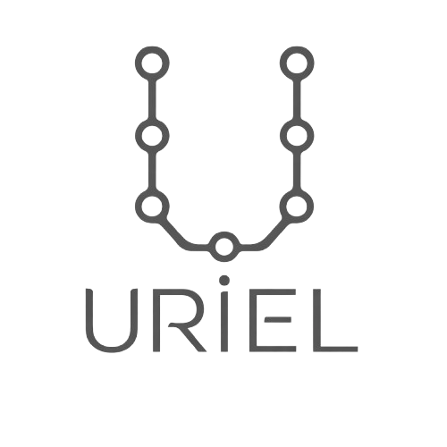
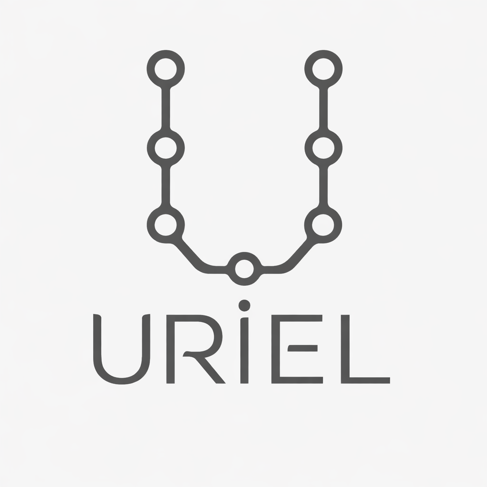
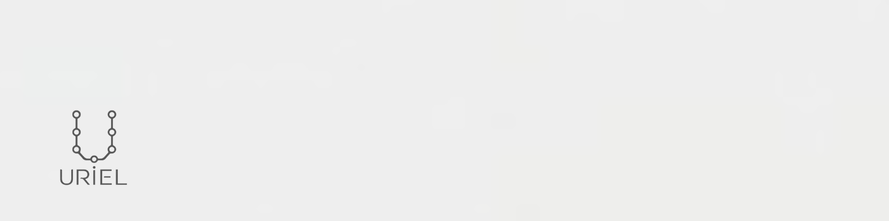
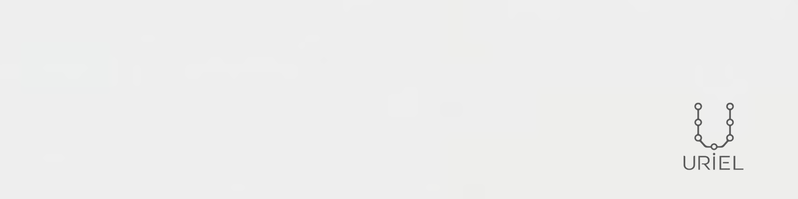

<style>
@import url('https://fonts.googleapis.com/css2?family=Fraunces:opsz,wght@9..144,300;9..144,400;9..144,600&family=Inter:wght@300;400;500;600&family=JetBrains+Mono:wght@400;500&display=swap');

* { margin: 0; padding: 0; box-sizing: border-box; }

@page { size: A4 landscape; margin: 0; }

html, body { width: 297mm; }

body {
  font-family: 'Inter', Arial, sans-serif;
  color: #5F5F5F;
  background: #FFFFFF;
}

.page {
  width: 297mm;
  height: 210mm;
  page-break-after: always;
  box-sizing: border-box;
  padding: 18mm;
  position: relative;
  overflow: hidden;
  background: #FFFFFF;
}
.page:last-child { page-break-after: auto; }

.label {
  font-family: 'JetBrains Mono', monospace;
  font-size: 10pt;
  letter-spacing: 0.12em;
  text-transform: uppercase;
  color: #9A9A9A;
}

h1 {
  font-family: 'Fraunces', Georgia, serif;
  font-weight: 400;
  font-size: 40pt;
  color: #3A3A3A;
  line-height: 1.1;
}

h2 {
  font-family: 'Fraunces', Georgia, serif;
  font-weight: 400;
  font-size: 24pt;
  color: #3A3A3A;
  margin-bottom: 8mm;
}

p { font-size: 11pt; line-height: 1.6; }

.footer {
  position: absolute;
  bottom: 12mm;
  left: 18mm;
  right: 18mm;
  display: flex;
  justify-content: space-between;
  font-family: 'JetBrains Mono', monospace;
  font-size: 8pt;
  color: #BFBFBF;
  border-top: 1px solid #EFEFEF;
  padding-top: 3mm;
}

/* ---- COVER ---- */
.cover {
  background: #F5F5F5;
  display: flex;
  flex-direction: column;
  align-items: center;
  justify-content: center;
  text-align: center;
}
.cover img { width: 140px; margin-bottom: 14mm; }
.cover h1 { font-size: 46pt; }
.cover .sub {
  font-family: 'JetBrains Mono', monospace;
  font-size: 11pt;
  letter-spacing: 0.15em;
  text-transform: uppercase;
  color: #9A9A9A;
  margin-top: 6mm;
}
.cover .date {
  position: absolute;
  bottom: 18mm;
  font-family: 'JetBrains Mono', monospace;
  font-size: 9pt;
  color: #BFBFBF;
}

/* ---- CONTENTS ---- */
.toc-list { margin-top: 10mm; }
.toc-item {
  display: flex;
  justify-content: space-between;
  padding: 4mm 0;
  border-bottom: 1px solid #EFEFEF;
  font-size: 13pt;
  color: #3A3A3A;
}
.toc-item span:last-child {
  font-family: 'JetBrains Mono', monospace;
  color: #BFBFBF;
  font-size: 10pt;
}

/* ---- BRAND STORY ---- */
.story-block { max-width: 190mm; margin-top: 6mm; }
.story-block p { margin-bottom: 5mm; font-size: 12.5pt; }
.story-meta {
  display: grid;
  grid-template-columns: 1fr 1fr 1fr;
  gap: 8mm;
  margin-top: 12mm;
}
.story-meta div { border-top: 1px solid #EFEFEF; padding-top: 3mm; }
.story-meta .label { display: block; margin-bottom: 2mm; }
.story-meta .value { font-size: 11pt; color: #3A3A3A; }

/* ---- LOGO ---- */
.logo-grid {
  display: grid;
  grid-template-columns: 1fr 1fr;
  gap: 8mm;
  margin-top: 8mm;
}
.logo-tile {
  border: 1px solid #EFEFEF;
  border-radius: 6px;
  display: flex;
  flex-direction: column;
  align-items: center;
  justify-content: center;
  padding: 8mm;
  height: 58mm;
}
.logo-tile.dark { background: #1A1A1A; }
.logo-tile img { max-height: 32mm; max-width: 80%; object-fit: contain; }
.logo-tile .cap {
  margin-top: 4mm;
  font-family: 'JetBrains Mono', monospace;
  font-size: 8.5pt;
  color: #9A9A9A;
}
.logo-tile.dark .cap { color: #BFBFBF; }

.clearspace-row { display: flex; gap: 12mm; margin-top: 8mm; align-items: center; }
.clearspace-box {
  border: 1px dashed #BFBFBF;
  padding: 10mm;
  display: flex;
  align-items: center;
  justify-content: center;
}
.clearspace-box img { width: 30mm; }
.clearspace-note { font-size: 10pt; color: #7A7A7A; max-width: 70mm; }
.minsize { display: flex; gap: 10mm; align-items: flex-end; margin-top: 6mm; }
.minsize img { height: 12mm; }
.minsize .cap { font-family: 'JetBrains Mono', monospace; font-size: 8pt; color: #9A9A9A; }

/* ---- LOGO DONT'S ---- */
.dont-grid {
  display: grid;
  grid-template-columns: repeat(3, 1fr);
  gap: 8mm;
  margin-top: 8mm;
}
.dont-tile {
  border: 1px solid #EFEFEF;
  border-radius: 6px;
  height: 52mm;
  display: flex;
  flex-direction: column;
  align-items: center;
  justify-content: center;
  position: relative;
  padding: 6mm;
  overflow: hidden;
}
.crop-window {
  height: 24mm;
  width: 100%;
  overflow: hidden;
  display: flex;
  align-items: center;
  justify-content: center;
}
.dont-tile img { max-height: 24mm; }
.dont-tile .x {
  position: absolute;
  top: 6mm; right: 8mm;
  width: 8mm; height: 8mm;
  color: #C24343;
  font-size: 16pt;
  font-weight: 600;
}
.dont-tile .cap {
  margin-top: 4mm;
  font-family: 'JetBrains Mono', monospace;
  font-size: 8.5pt;
  color: #9A9A9A;
  text-align: center;
}
.stretch img { transform: scaleX(1.8); }
.recolor img { filter: invert(20%) sepia(90%) saturate(2000%) hue-rotate(340deg); }
.shadow img { filter: drop-shadow(4mm 4mm 2mm rgba(0,0,0,0.5)); }
.busy { background: repeating-linear-gradient(45deg, #EFEFEF, #EFEFEF 4px, #DADADA 4px, #DADADA 8px); }
.crop-window img { transform: scale(1.8); }
.outline img { filter: contrast(0.3) brightness(1.6); }

/* ---- COLORS ---- */
.color-section { margin-top: 3mm; }
.color-section .label { margin: 4mm 0 2mm; }
.swatch-row { display: flex; gap: 6mm; }
.swatch {
  flex: 1;
  border-radius: 6px;
  height: 24mm;
  display: flex;
  flex-direction: column;
  justify-content: flex-end;
  padding: 4mm;
  border: 1px solid #EFEFEF;
}
.swatch .name { font-family: 'Inter', sans-serif; font-weight: 500; font-size: 10.5pt; }
.swatch .hex { font-family: 'JetBrains Mono', monospace; font-size: 9pt; }
.swatch.on-dark .name, .swatch.on-dark .hex { color: #EFEFEF; }
.swatch.on-light .name, .swatch.on-light .hex { color: #3A3A3A; }
.forbidden-row { display: flex; gap: 6mm; margin-top: 2mm; }
.forbidden {
  flex: 1; height: 15mm; border-radius: 6px; border: 1px solid #EFEFEF;
  display: flex; align-items: center; justify-content: center;
  font-family: 'JetBrains Mono', monospace; font-size: 9pt; color: #C24343;
  position: relative;
}
.forbidden::before, .forbidden::after {
  content: ''; position: absolute; width: 100%; height: 1px; background: #C24343; top: 50%;
}
.forbidden::before { transform: rotate(8deg); }
.forbidden::after { transform: rotate(-8deg); }

/* ---- TYPOGRAPHY ---- */
.type-block { margin-bottom: 9mm; }
.type-block .fname { font-family: 'JetBrains Mono', monospace; font-size: 9pt; color: #9A9A9A; margin-bottom: 2mm; }
.type-block .alpha { font-size: 18pt; color: #3A3A3A; letter-spacing: 0.02em; }
.fraunces-sample { font-family: 'Fraunces', Georgia, serif; }
.inter-sample { font-family: 'Inter', Arial, sans-serif; }
.mono-sample { font-family: 'JetBrains Mono', monospace; }
.scale-row { display: flex; align-items: baseline; gap: 6mm; margin-top: 8mm; border-top: 1px solid #EFEFEF; padding-top: 6mm; }
.scale-row .tag { font-family: 'JetBrains Mono', monospace; font-size: 8pt; color: #BFBFBF; width: 16mm; }

/* ---- VOICE ---- */
.tone-spectrum { display: flex; gap: 4mm; margin: 8mm 0 10mm; }
.tone-pill {
  font-family: 'JetBrains Mono', monospace;
  font-size: 9pt;
  border: 1px solid #BFBFBF;
  border-radius: 20px;
  padding: 3mm 6mm;
  color: #3A3A3A;
}
.pair-grid { display: grid; grid-template-columns: 1fr 1fr; gap: 6mm; }
.pair { border: 1px solid #EFEFEF; border-radius: 6px; padding: 6mm; }
.pair .tag { font-family: 'JetBrains Mono', monospace; font-size: 8pt; margin-bottom: 3mm; display: block; }
.pair.do .tag { color: #4A7A4A; }
.pair.dont .tag { color: #C24343; }
.pair p { font-size: 10.5pt; }

/* ---- APPLICATIONS ---- */
.app-grid { display: grid; grid-template-columns: 1fr 1fr; gap: 8mm; margin-top: 8mm; }
.app-tile { border: 1px solid #EFEFEF; border-radius: 6px; overflow: hidden; }
.app-tile img { width: 100%; display: block; }
.app-tile .cap { padding: 4mm 5mm; font-family: 'JetBrains Mono', monospace; font-size: 8.5pt; color: #9A9A9A; }

/* ---- MISSING ---- */
.gap-list { margin-top: 8mm; }
.gap-item {
  display: flex; gap: 5mm; padding: 4mm 0;
  border-bottom: 1px solid #EFEFEF;
  font-size: 11.5pt; color: #3A3A3A;
}
.gap-item .n { font-family: 'JetBrains Mono', monospace; color: #BFBFBF; width: 8mm; }

/* ---- BACK COVER ---- */
.back {
  background: #1A1A1A;
  display: flex;
  flex-direction: column;
  align-items: center;
  justify-content: center;
  text-align: center;
}
.back img { width: 90px; margin-bottom: 8mm; filter: invert(1) brightness(1.8); }
.back .contact { font-family: 'JetBrains Mono', monospace; font-size: 10pt; color: #BFBFBF; }
.back .version { position: absolute; bottom: 16mm; font-family: 'JetBrains Mono', monospace; font-size: 8pt; color: #606060; }
</style>

<!-- 1. COVER -->
<section class="page cover">
  
  <h1>Brand Guidelines</h1>
  <div class="sub">Uriel — Data Engineering &amp; AI</div>
  <div class="date">v1.0 — July 2026</div>
</section>

<!-- 2. CONTENTS -->
<section class="page">
  <div class="label">Contents</div>
  <h2>What's inside</h2>
  <div class="toc-list">
    <div class="toc-item"><span>Brand story</span><span>03</span></div>
    <div class="toc-item"><span>Logo</span><span>04</span></div>
    <div class="toc-item"><span>Logo don'ts</span><span>05</span></div>
    <div class="toc-item"><span>Colors</span><span>06</span></div>
    <div class="toc-item"><span>Typography</span><span>07</span></div>
    <div class="toc-item"><span>Voice &amp; tone</span><span>08</span></div>
    <div class="toc-item"><span>Applications</span><span>09</span></div>
    <div class="toc-item"><span>What's still missing</span><span>10</span></div>
  </div>
  <div class="footer"><span>Uriel Brand Guidelines — p. 2</span><span>v1.0 — 2026</span></div>
</section>

<!-- 3. BRAND STORY -->
<section class="page">
  <div class="label">Brand story</div>
  <h2>Who Uriel is</h2>
  <div class="story-block">
    <p>Uriel is a data engineering and AI solopreneur. He leads and coordinates data projects end to end, conception to deploy: designing pipelines, tuning databases, delivering analytics.</p>
    <p>Alongside client work, he writes about data, tech, AI, and project management on Medium and Substack, sharing real decisions and real numbers rather than theory.</p>
    <p>The visual identity reflects that: monochromatic, technical, no decoration. What you see is what the work looks like.</p>
  </div>
  <div class="story-meta">
    <div><span class="label">Profile</span><span class="value">Solopreneur + Freelancer, solo operation</span></div>
    <div><span class="label">Serves</span><span class="value">Companies, per-project consulting</span></div>
    <div><span class="label">Also runs</span><span class="value">Medium, Substack, Buy Me a Coffee</span></div>
  </div>
  <div class="footer"><span>Uriel Brand Guidelines — p. 3</span><span>v1.0 — 2026</span></div>
</section>

<!-- 4. LOGO -->
<section class="page">
  <div class="label">Logo</div>
  <h2>Primary mark</h2>
  <div class="logo-grid">
    <div class="logo-tile">
      
      <span class="cap">ON LIGHT — uriel-logo.png</span>
    </div>
    <div class="logo-tile dark">
      
      <span class="cap">ON DARK — uriel-logo-nobg.png</span>
    </div>
  </div>
  <div class="clearspace-row">
    <div class="clearspace-box">
      
    </div>
    <div class="clearspace-note">Clear space: keep padding around the mark at least equal to the height of the mark's dot (the "i" node). Never let text or edges enter this zone.</div>
    <div class="minsize">
      
      <span class="cap">Min. width: 24px digital / 15mm print</span>
    </div>
  </div>
  <div class="footer"><span>Uriel Brand Guidelines — p. 4</span><span>v1.0 — 2026</span></div>
</section>

<!-- 5. LOGO DON'TS -->
<section class="page">
  <div class="label">Logo</div>
  <h2>Don'ts</h2>
  <div class="dont-grid">
    <div class="dont-tile stretch">
      
      <span class="cap">Don't stretch or distort</span>
    </div>
    <div class="dont-tile recolor">
      
      <span class="cap">Don't recolor — monochrome only</span>
    </div>
    <div class="dont-tile shadow">
      
      <span class="cap">Don't add shadows or effects</span>
    </div>
    <div class="dont-tile busy">
      
      <span class="cap">Don't place on busy backgrounds</span>
    </div>
    <div class="dont-tile crop">
      <div class="crop-window">
        
      </div>
      <span class="cap">Don't crop the mark</span>
    </div>
    <div class="dont-tile outline">
      
      <span class="cap">Don't lower contrast / wordmark must stay legible</span>
    </div>
  </div>
  <div class="footer"><span>Uriel Brand Guidelines — p. 5</span><span>v1.0 — 2026</span></div>
</section>

<!-- 6. COLORS -->
<section class="page">
  <div class="label">Colors</div>
  <h2 style="margin-bottom:4mm;">Palette</h2>
  <p style="max-width:190mm; margin-bottom:0;">Monochromatic only. No primary colors, no accent colors — clean, minimal, technical.</p>

  <div class="color-section">
    <div class="label">Primary — strokes &amp; text</div>
    <div class="swatch-row">
      <div class="swatch on-light" style="background:#5F5F5F;"><span class="name">Primary</span><span class="hex">#5F5F5F</span></div>
      <div class="swatch on-light" style="background:#606060;"><span class="name">Variation</span><span class="hex">#606060</span></div>
      <div class="swatch on-light" style="background:#626262;"><span class="name">Smooth curves</span><span class="hex">#626262</span></div>
    </div>
  </div>

  <div class="color-section">
    <div class="label">Light mode backgrounds</div>
    <div class="swatch-row">
      <div class="swatch on-dark" style="background:#FFFFFF; border:1px solid #EFEFEF;"><span class="name" style="color:#3A3A3A">Pure white</span><span class="hex" style="color:#3A3A3A">#FFFFFF</span></div>
      <div class="swatch on-dark" style="background:#F5F5F5;"><span class="name" style="color:#3A3A3A">Soft background</span><span class="hex" style="color:#3A3A3A">#F5F5F5</span></div>
      <div class="swatch on-dark" style="background:#EFEFEF;"><span class="name" style="color:#3A3A3A">Slightly darker</span><span class="hex" style="color:#3A3A3A">#EFEFEF</span></div>
    </div>
  </div>

  <div class="color-section">
    <div class="label">Dark mode</div>
    <div class="swatch-row">
      <div class="swatch on-light" style="background:#000000;"><span class="name">Background</span><span class="hex">#000000</span></div>
      <div class="swatch on-light" style="background:#1A1A1A;"><span class="name">Near-black softened</span><span class="hex">#1A1A1A</span></div>
      <div class="swatch on-light" style="background:#BFBFBF;"><span class="name" style="color:#3A3A3A">Light stroke</span><span class="hex" style="color:#3A3A3A">#BFBFBF</span></div>
      <div class="swatch on-light" style="background:#CFCFCF;"><span class="name" style="color:#3A3A3A">Highlight variation</span><span class="hex" style="color:#3A3A3A">#CFCFCF</span></div>
    </div>
  </div>

  <div class="color-section">
    <div class="label">Forbidden</div>
    <div class="forbidden-row">
      <div class="forbidden">Any saturated / primary accent color</div>
      <div class="forbidden">Gradients or brand blues/greens</div>
    </div>
  </div>
  <div class="footer"><span>Uriel Brand Guidelines — p. 6</span><span>v1.0 — 2026</span></div>
</section>

<!-- 7. TYPOGRAPHY -->
<section class="page">
  <div class="label">Typography</div>
  <h2>Type system</h2>

  <div class="type-block">
    <div class="fname">FRAUNCES — display &amp; titles: name on homepage, headings, article titles, lede paragraph</div>
    <div class="alpha fraunces-sample">Aa Bb Cc Dd Ee Ff Gg — 0123456789</div>
  </div>
  <div class="type-block">
    <div class="fname">INTER — body: all paragraphs, descriptions, nav links, definition lists</div>
    <div class="alpha inter-sample">Aa Bb Cc Dd Ee Ff Gg — 0123456789</div>
  </div>
  <div class="type-block">
    <div class="fname">JETBRAINS MONO — metadata &amp; labels: section labels, detail keys, reading times, footer</div>
    <div class="alpha mono-sample">Aa Bb Cc Dd Ee Ff Gg — 0123456789</div>
  </div>

  <div class="scale-row"><span class="tag">H1</span><span class="fraunces-sample" style="font-size:28pt; color:#3A3A3A;">Heading one</span></div>
  <div class="scale-row"><span class="tag">H2</span><span class="fraunces-sample" style="font-size:20pt; color:#3A3A3A;">Heading two</span></div>
  <div class="scale-row"><span class="tag">BODY</span><span class="inter-sample" style="font-size:12pt;">Body copy sits here, short paragraphs, direct sentences.</span></div>
  <div class="scale-row"><span class="tag">CAPTION</span><span class="mono-sample" style="font-size:9pt; color:#9A9A9A;">CAPTION / LABEL / METADATA</span></div>
  <div class="footer"><span>Uriel Brand Guidelines — p. 7</span><span>v1.0 — 2026</span></div>
</section>

<!-- 8. VOICE & TONE -->
<section class="page">
  <div class="label">Voice &amp; tone</div>
  <h2>How the brand talks</h2>
  <div class="tone-spectrum">
    <span class="tone-pill">Direct</span>
    <span class="tone-pill">Personal</span>
    <span class="tone-pill">Narrative</span>
    <span class="tone-pill">Technical but human</span>
    <span class="tone-pill">No hedging</span>
  </div>
  <div class="pair-grid">
    <div class="pair do"><span class="tag">DO</span><p>"I migrated the pipeline off Fabric because latency was killing the client's dashboards. Three weeks, no rollback."</p></div>
    <div class="pair dont"><span class="tag">DON'T</span><p>"Leveraging cutting-edge synergies, we disrupted the data pipeline landscape."</p></div>
    <div class="pair do"><span class="tag">DO</span><p>"Here's the query that cut the report from 40 seconds to 2."</p></div>
    <div class="pair dont"><span class="tag">DON'T</span><p>"It's worth noting that, in conclusion, performance was impactfully improved."</p></div>
    <div class="pair do"><span class="tag">DO</span><p>Short paragraphs. First person. Real numbers, real projects, problem → solution.</p></div>
    <div class="pair dont"><span class="tag">DON'T</span><p>Em dashes, emojis, guru jargon, soft vague conclusions.</p></div>
  </div>
  <div class="footer"><span>Uriel Brand Guidelines — p. 8</span><span>v1.0 — 2026</span></div>
</section>

<!-- 9. APPLICATIONS -->
<section class="page">
  <div class="label">Applications</div>
  <h2>Where the mark lives</h2>
  <div class="app-grid">
    <div class="app-tile">
      
      <div class="cap">Cover banner — logo left, used for carousel CTA slides and proposal headers</div>
    </div>
    <div class="app-tile">
      
      <div class="cap">Cover banner — logo right, used for presentation slide backgrounds</div>
    </div>
  </div>
  <div class="footer"><span>Uriel Brand Guidelines — p. 9</span><span>v1.0 — 2026</span></div>
</section>

<!-- 10. WHAT'S STILL MISSING -->
<section class="page">
  <div class="label">Gaps</div>
  <h2>What's still missing</h2>
  <div class="gap-list">
    <div class="gap-item"><span class="n">01</span><span>No photography or imagery style defined yet beyond the logo assets — add real work photos or screenshots when available.</span></div>
    <div class="gap-item"><span class="n">02</span><span>Font files (Fraunces, Inter, JetBrains Mono) are not stored locally in the identity folder — this book uses the Google Fonts web versions as a stand-in.</span></div>
    <div class="gap-item"><span class="n">03</span><span>No published content samples found in areas/marketing/ yet — once carousels or thumbnails exist, add them to the Applications page.</span></div>
    <div class="gap-item"><span class="n">04</span><span>No icon-only / favicon variant of the mark exists yet, separate from the full wordmark lockup.</span></div>
  </div>
  <div class="footer"><span>Uriel Brand Guidelines — p. 10</span><span>v1.0 — 2026</span></div>
</section>

<!-- 11. BACK COVER -->
<section class="page back">
  
  <div class="contact">lorenzouriel394@gmail.com</div>
  <div class="version">v1.0 — July 2026</div>
</section>
